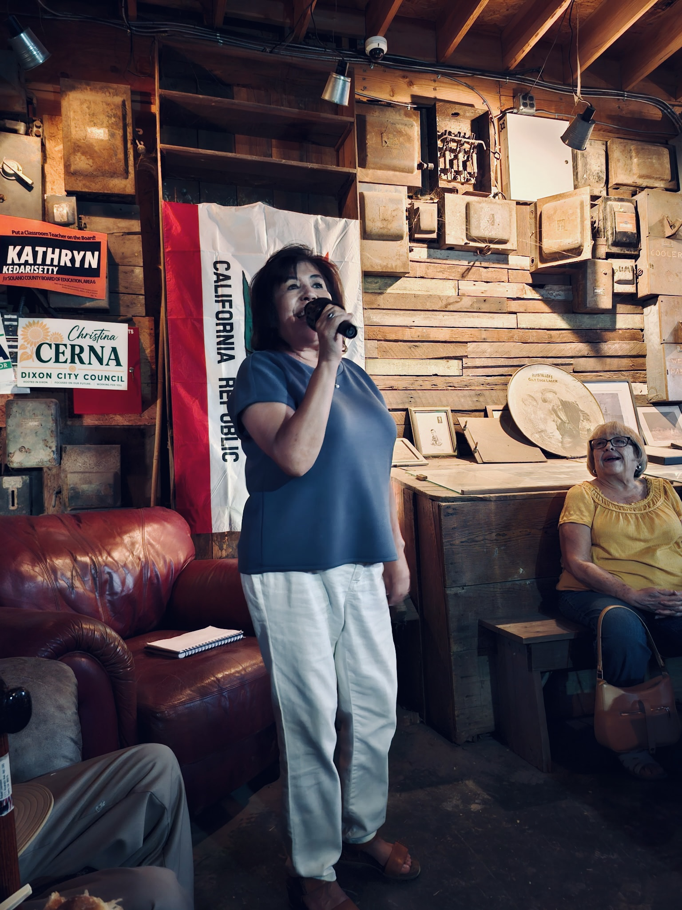

Meet Christina
Christina Cerna is a lifelong member of the Dixon community who was raised on her family’s ranch in Dixon, California. A graduate of Dixon High School, she went on to earn a Bachelor of Arts degree from the University of the Pacific. Her local roots and connection to the community have shaped her commitment to preserving Dixon’s small-town character while ensuring residents have a meaningful voice in its future.
Christina believes that community members deserve to be heard on issues that affect their daily lives, particularly as Dixon continues to grow. Her priorities include addressing the traffic and safety impacts of development, ensuring adequate infrastructure for emergencies in a community divided by railroad tracks, and improving roadways, pathways, sidewalks, and pedestrian safety for children walking or bicycling to school. She also supports pursuing additional funding opportunities to help meet the city’s needs while protecting local farmland, open spaces, natural habitats, and the peaceful character of the community.
As a locally raised candidate for Dixon City Council, Christina is committed to working hard on behalf of residents and helping ensure that decisions about Dixon’s future reflect the needs, concerns, and values of the people who call it home. She hopes to contribute to thoughtful growth, a safer community, and a healthy quality of life for current and future generations.

Highlights
CO-OWNER / VINTAGE AFFAIRS
Christina and her sister have owner a business in downtown Dixon for X years.
TREASURER / DOWNTOWN DIXON BUSINESS ASSOCIATION
Member of the DDBA 2026 Board of Directors.
ROLE / ORGANIZATION
DESCRIPTION